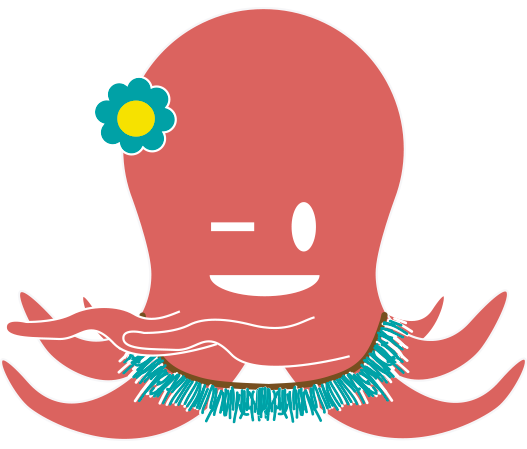
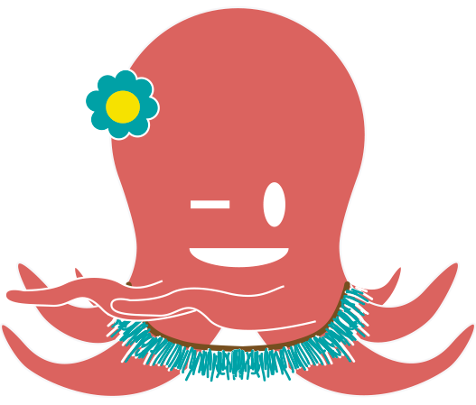

Tier5 Outbound Sales Lead Generating Platform
The Client
Tier5, an early stage start-up, engaged us to give their outbound sales-lead generating platform a visual facelift. But after our extenisive research we found their UX Design and even part of their business model also needed a rebuild. Our redesign increased their market opportunity by 3x.
My Role
Over 2 a two-week period our very close-knit, two-person team worked collaberatively on every aspect of UX Design process: research, hueristic evaluation, compatitive analysis, user interviews, user testing, design, sketching, creating low- and medium-fidelity protoytypes, and presenting our work.
Our Process
Strategy
Research &
Discovery
Discovery
Design
Build &
Deliver
Deliver
Strategy
Our Strategic Approach